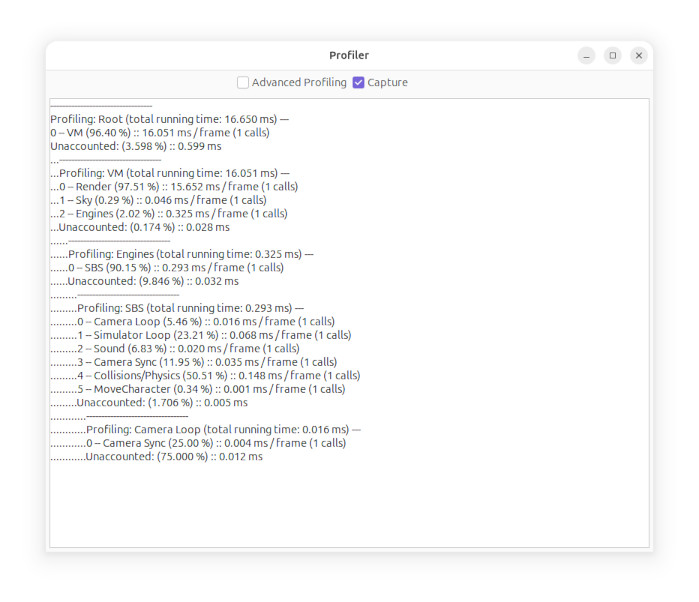

Profiler
The profiler is a tool for developers to use, primarily to
diagnose performance issues.

VM is the root of the simulator, with VM's subsystems next
("Engines" refers to the Engine Contexts system), and SBS is the
simulator engine with it's subsystems.
You will notice "1 calls" for each item, this will usually be the
number of simulators loaded (sim engine instances).
Each iteration of the profiler is a per-frame statistic. The
running times are the amount of time running since last frame.
Click on Advanced Profiling to see more detailed
information, and turn off Capture to be able to read it
more easily.